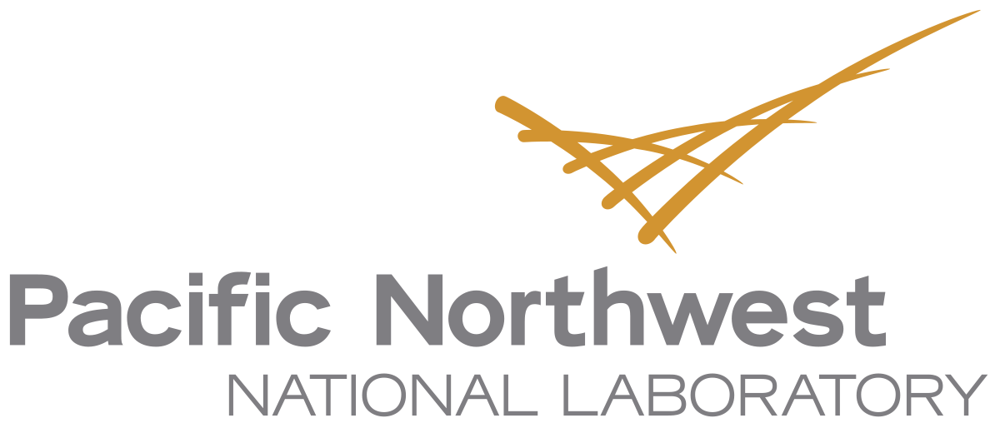
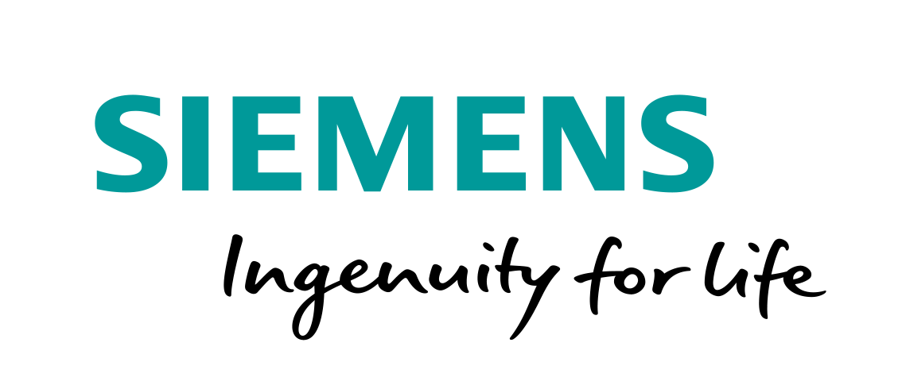
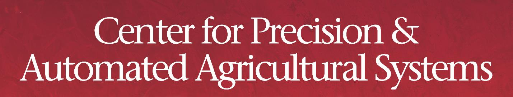
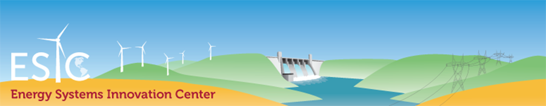
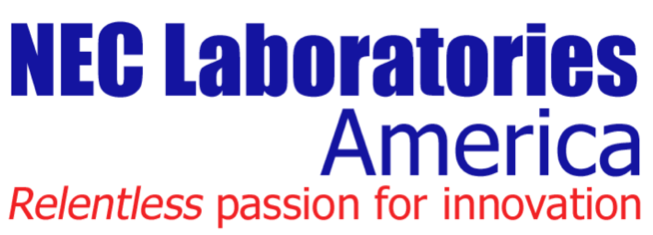

| Yinghui Wu Theodore L. and Dana J. Schroeder Associate Professor Department of Computer & Data Sciences Case School of Engineering Case Western Reserve University |
Olin 515 2101 Martin Luther King Jr Dr, Cleveland, OH 44106 Office: 216.368.8829 Email: yxw1650_at_case_dot_edu Homepage: https://yinghwu.github.io/ |
Home | Teaching | Research | Services | Students | Publications | Talks | Bio/CV
Research Interests:
- Data and Knowledge Systems for AI: AI-ready data and knowledge infrastructure, knowledge graphs and ontologies, LLM/agent interfaces to structured data, AI/ML asset management, provenance, FAIR data, data quality, and model/data discovery
- Graph AI and Trustworthy Machine Learning: graph and temporal graph learning, explainability, counterfactual and causal reasoning, graph compression, efficient GNN inference, and reliable model/data interaction
- AI for Scientific Discovery: multimodal scientific data and knowledge, materials and molecular graph learning, scientific ontologies, spatiotemporal AI, and AI-assisted scientific workflows for materials, energy, chemistry, agriculture, and resilient infrastructure
Programs & Projects (Selected)
- Data
& Knowledge Infrastructure for AI and Scientific Discovery
- MDS3 - AI-ready
data and knowledge infrastructure for materials science,
including scientific ontologies, FAIR data, provenance,
knowledge graphs, data quality, and reusable
software/workflows [Center of Excellence; Co-director]
- CASFER - Data-,
knowledge-, and AI-enabled infrastructure for sustainable
and distributed fertilizer production, including scientific
data integration, knowledge representation, and AI-assisted
discovery
- CRUX -
Scientific data, model, and workflow discovery, reuse,
provenance, and AI/ML asset management for accelerating time
to science
- CORN
- Credible knowledge and data quality: error detection, data
repair, consistency analysis, and fact checking
- Graph AI: Explainability, Efficiency, and Trust
- Explainable graph learning: view-based and skyline explanations, robust counterfactual witnesses, training-free temporal counterfactuals, causal temporal explanations, and layer-wise explanations
- Efficient graph learning and inference: inference-friendly graph compression, interpretable graph compression, and inference-aware data management
- LLM/agent interaction with graphs and knowledge: GraphLingo knowledge exploration, constraint-guided query generation, ontology matching with retrieval-augmented LLMs, and serendipity-aware knowledge discovery
- AI/ML asset management: dataset/model discovery, exemplar-driven model search, tracking, provenance, evaluation, reuse, and AI-ready asset organization
- AI
for Scientific and Spatiotemporal Systems
- Materials and molecular AI - multimodal scientific data, materials image segmentation, molecular graph learning and LLM-enhanced property prediction, degradation modeling, and scientific knowledge infrastructure
- Scientific data and knowledge infrastructure - MDS-Onto, FAIRmaterials, FAIRLinked, OntoCheck, and related tools for ontology construction, FAIRification, quality assessment, provenance, and AI-ready scientific data
- PV-stGNN - Spatiotemporal graph learning for photovoltaic performance and degradation analysis
- ArgoPV - Generative AI and data-driven lifecycle intelligence for solar energy systems
- Geospatial and cyber-energy intelligence - multimodal geospatiotemporal knowledge graphs and benchmarks, event detection, forecasting, anomaly analysis, power-outage reasoning, and resilience
- Scientific digital twins and spatiotemporal systems - data-driven digital twins, graph learning for photovoltaic and advanced-manufacturing systems, nutrient-flow forecasting, spatiotemporal correlation, cascading behavior, and temporal graph inference
- Scalable
Data & Graph Processing
- Graph query processing, knowledge exploration, and agentic query generation across RDF/property-graph settings
- Approximate, parallel, and distributed query processing, including scalable graph and scientific-data workloads
- Event analysis and learning over dynamic graphs, temporal graphs, geospatiotemporal data, and data streams
- Systems support for scalable AI/ML inference over graph-structured data, including graph compression and reusable AI/ML assets
- MDS-Onto
/ FAIR scientific-data ecosystem: MDS-Onto,
FAIRmaterials,
FAIRLinked,
OntoCheck,
and related open-source tools for building scientific
ontologies, converting research data to linked/FAIR
representations, assessing ontology quality, and supporting
reusable materials-data workflows
- Scientific graph AI: HASolGNN /
HASolGNN-LLMs for hierarchical molecular graph learning
and LLM-enhanced solubility prediction; data-driven
digital-twin and spatiotemporal graph-learning software for
materials, photovoltaic, and advanced-manufacturing
applications
- Knowledge graphs + LLM/agents: GraphLingo
for synchronized KG/LLM exploration; UniQGen for
constraint-guided graph-query generation with LLM agents; KROMA for
retrieval-augmented ontology matching; SerenQA
for benchmarking serendipity discovery in scientific knowledge
graphs
- Geospatiotemporal knowledge infrastructure: GeoOutageKG / GeoOutageBench and
related data integration tools for ontology-grounded,
multimodal power-outage and resilience analysis
- Graph AI explanation and efficient inference: graph-view
explanations, robust
counterfactual witnesses, skyline explanations,
SliceGX
layer-wise explanations, training-free
temporal counterfactuals, causal
temporal explanations, and inference-friendly
graph compression
- ML asset and scientific workflow management: ModsNet,
CRUX/CRADLE,
and related methods for dataset/model search, exemplar-based
model selection, provenance, workflow discovery, and reusable
AI/ML assets
- Graph data quality: GEDet/GALE
and related methods for detecting, explaining, and repairing
erroneous graph data with limited supervision
- Earlier graph data systems: Kronos/Kronos++,
GExp,
GSum, NAVIGATE,
GRIP,
Percolator,
BEAMS,
and GRAPE
for knowledge-guided event analysis, graph exploration,
explanation, and scalable graph computation




